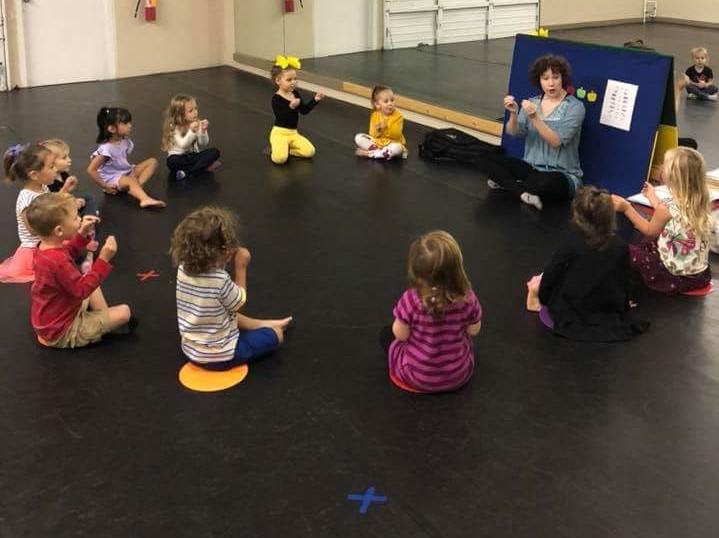

What I Do
Miss Cheyenne Martinek has a passion for sharing the love of dance, music and creativity; she is the music and movement teacher with Northwest School of Dance's Performing Arts Preschool, as well as one of the combo teachers. She also works a specialty teacher at Manette Kid's preschool, subbing and bringing specialty dance classes. She has been dancing for over 16 years, with 8+ years of experience working with children both inside and out of studio classes. Miss Cheyenne has an Associates Degree in Early Childhood Education from Olympic College, is certified in Anne Green Gilbert’s Creative Dance (Brain Dance) program, and a degree in Montessori Education from NAMC.
- Jen Picart Branner
